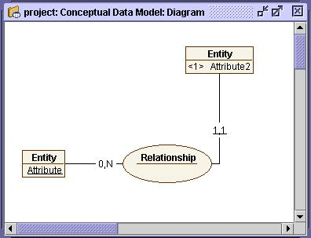
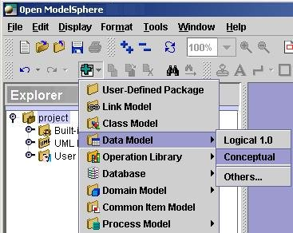

Conceptual Data Modeling: Acknowledging the basic concepts
The basic concepts
 Entity : an information object of business relevance
Entity : an information object of business relevance
 Attribute : a descriptor of an entity
Attribute : a descriptor of an entity
 Relationship : a graphical representation of a relationship
between normally two entities, generally among n entities
Relationship : a graphical representation of a relationship
between normally two entities, generally among n entities
 Role : each side of the relationship. Qualifies each
entity's implication in this relationship
Role : each side of the relationship. Qualifies each
entity's implication in this relationship
Role multiplicity : the number of occurrences of the
related entity
Role navigability : indicates if this entity is a child
or a parent entity
Role constraint type : integrity mechanism
Key: primary  or unique
or unique 
Key dependency: for primary and unique keys

Building a conceptual data model
A conceptual data model consists of entities with attributes
and n-ary relationships. A conceptual data model is used as a communication
vehicle to build and represent the perspective of the business user's information needs.
It is possible to create a conceptual data model from the main menu, from the explorer window
and from the edit toolbar.
- From the main menu, choose Edit > Add > Data model > Conceptual.
- From the explorer window, right-click project. Then, from the pop-up menu,
choose Add > Data model > Conceptual.
- From the edit toolbar, look for the Add
 tool , click it and choose Data
model > Conceptual.
tool , click it and choose Data
model > Conceptual.

By default, a conceptual data model comes with a diagram. Here is how to display it:
- Click the handle
 next to the data model in the explorer window, Diagram
will appear.
next to the data model in the explorer window, Diagram
will appear.
- Right-click Diagram.
- From the pop-up menu, choose Show diagram.
The diagram appears on the right side of the explorer window. If it is empty, right-click
inside the diagram window and from the pop-up menu choose Add Missing
Graphical Representations.
If you do not want the data model to be automatically created with a diagram,
change the default settings. See Modifying the options.